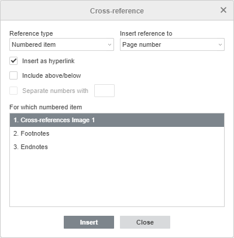

Umetanje unakrsnih referenci
U Editoru dokumenata, unakrsne reference se koriste za kreiranje linkova koji vode na druge delove istog dokumenta, npr. naslove ili objekte poput grafikona ili tabela. Takve reference se pojavljuju u obliku hiperveze.
Kreiranje unakrsne reference
- Pozicionirajte kursor na mesto gde želite da umetnete unakrsnu referencu.
- Idite na karticu Reference i kliknite na ikonu Unakrsna referenca.
-
Podesite potrebne parametre u otvorenom prozoru Unakrsna referenca:

- Meni Tip reference određuje stavku na koju želite da se pozovete, tj. numerisanu stavku (podrazumevano), naslov, obeleživač, fusnotu, završnu napomenu, jednačinu, sliku ili tabelu. Izaberite željeni tip stavke.
-
Padajući meni Umetni referencu na određuje tekst ili numeričku vrednost reference koju želite da umetnete, u zavisnosti od stavke koju ste izabrali u meniju Tip reference. Na primer, ako ste izabrali opciju Naslov, možete navesti sledeći sadržaj: Tekst naslova, Broj strane, Broj naslova, Broj naslova (bez konteksta), Broj naslova (ceo kontekst), Iznad/ispod.
Kompletan spisak opcija u zavisnosti od izabranog tipa reference
Tip reference Umetni referencu na Opis Numerisana stavka Broj strane Umeće broj strane numerisane stavke Broj pasusa Umeće broj pasusa numerisane stavke Broj pasusa (bez konteksta) Umeće skraćen broj pasusa. Referenca se odnosi samo na konkretnu stavku numerisane liste, npr. umesto „4.1.1“ dobijate „1“ Broj pasusa (ceo kontekst) Umeće ceo broj pasusa, npr. „4.1.1“ Tekst pasusa Umeće tekst pasusa, npr. ako imate „4.1.1. Uslovi korišćenja“, dobićete samo „Uslovi korišćenja“ Iznad/ispod Umeće reči „iznad“ ili „ispod“ u zavisnosti od pozicije stavke Naslov Tekst naslova Umeće ceo tekst naslova Broj strane Umeće broj strane naslova Broj naslova Umeće redni broj naslova Broj naslova (bez konteksta) Umeće skraćen broj naslova. Npr. ako ste u odeljku 4 i želite da se pozovete na naslov 4.B, umesto „4.B“ dobićete samo „B“ Broj naslova (ceo kontekst) Umeće ceo broj naslova čak i ako se kursor nalazi u istom odeljku Iznad/ispod Umeće reči „iznad“ ili „ispod“ u zavisnosti od pozicije stavke Obeleživač Tekst obeleživača Umeće ceo tekst obeleživača Broj strane Umeće broj strane obeleživača Broj pasusa Umeće broj pasusa obeleživača Broj pasusa (bez konteksta) Umeće skraćen broj pasusa. Referenca se odnosi samo na konkretnu stavku, npr. umesto „4.1.1“ dobijate „1“ Broj pasusa (ceo kontekst) Umeće ceo broj pasusa, npr. „4.1.1“ Iznad/ispod Umeće reči „iznad“ ili „ispod“ u zavisnosti od pozicije stavke Fusnota Broj fusnote Umeće broj fusnote Broj strane Umeće broj strane fusnote Iznad/ispod Umeće reči „iznad“ ili „ispod“ u zavisnosti od pozicije stavke Broj fusnote (formatiran) Umeće broj fusnote formatiran kao fusnota. Numeracija stvarnih fusnota ostaje nepromenjena Završna napomena Broj završne napomene Umeće broj završne napomene Broj strane Umeće broj strane završne napomene Iznad/ispod Umeće reči „iznad“ ili „ispod“ u zavisnosti od pozicije stavke Broj završne napomene (formatiran) Umeće broj završne napomene formatiran kao završna napomena. Numeracija stvarnih završnih napomena ostaje nepromenjena Jednačina / Slika / Tabela Ceo natpis Umeće ceo tekst natpisa Samo oznaka i broj Umeće samo oznaku i broj objekta, npr. „Tabela 1.1“ Samo tekst natpisa Umeće samo tekst natpisa Broj strane Umeće broj strane na kojoj se nalazi referencirani objekat Iznad/ispod Umeće reči „iznad“ ili „ispod“ u zavisnosti od pozicije stavke
- Označite polje Umetni kao hipervezu da biste referencu pretvorili u aktivni link.
- Označite polje Uključi iznad/ispod (ako je dostupno) da biste naveli poziciju stavke na koju se pozivate. ONLYOFFICE Editor dokumenata će automatski umetnuti reči „iznad“ ili „ispod“ u zavisnosti od pozicije stavke.
- Označite polje Razdvoji brojeve sa da biste naveli separator u polju desno. Separatori su potrebni za reference sa celim kontekstom.
- Polje Za koje prikazuje stavke dostupne prema tipu reference koji ste izabrali, npr. ako ste izabrali opciju Naslov, videćete kompletnu listu naslova u dokumentu.
- Kliknite Umetni da biste kreirali unakrsnu referencu.
Uklanjanje unakrsne reference
Da biste obrisali unakrsnu referencu, izaberite je i pritisnite taster Delete.